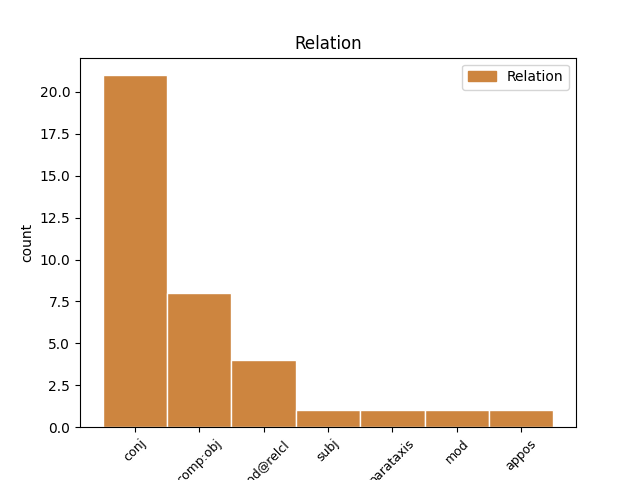
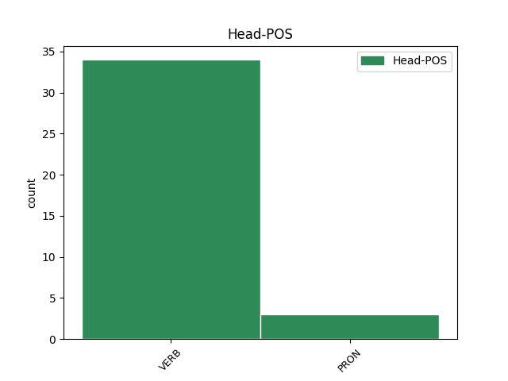
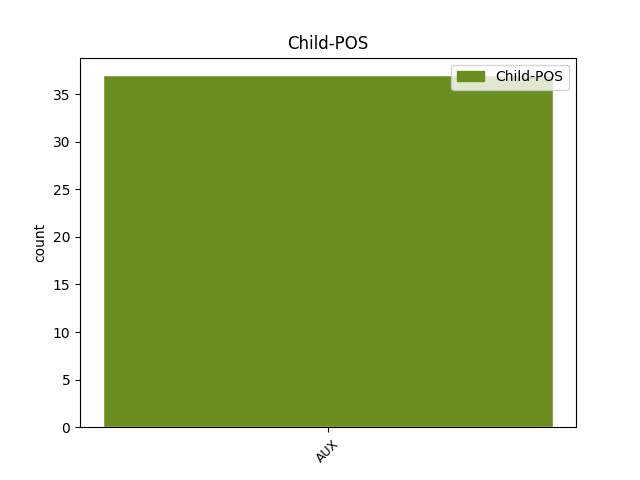

Distribution of features within this leaf



Agreement Rules sorted by frequency.
- When the dependent token is the conjunct(conj) of the head token, and the head token is VERB and the dependent token is AUX.
1 The _ _ _ _ 0 _ _ _
2 poetry _ _ _ _ 0 _ _ _
3 depends depend VERB V Mood=Ind|Number=Sing|Person=3|Tense=Pres|VerbForm=Fin 0 _ _ _
4 on _ _ _ _ 0 _ _ _
5 extended _ _ _ _ 0 _ _ _
6 , _ _ _ _ 0 _ _ _
7 sometimes _ _ _ _ 0 _ _ _
8 elaborate _ _ _ _ 0 _ _ _
9 metaphors _ _ _ _ 0 _ _ _
10 and _ _ _ _ 0 _ _ _
11 conceits _ _ _ _ 0 _ _ _
12 , _ _ _ _ 0 _ _ _
13 and _ _ _ _ 0 _ _ _
14 the _ _ _ _ 0 _ _ _
15 language _ _ _ _ 0 _ _ _
16 is be AUX V Mood=Ind|Number=Sing|Person=3|Tense=Pres|VerbForm=Fin 3 conj _ _
17 often _ _ _ _ 0 _ _ _
18 rhetorical _ _ _ _ 0 _ _ _
19 — _ _ _ _ 0 _ _ _
20 written _ _ _ _ 0 _ _ _
21 for _ _ _ _ 0 _ _ _
22 actors _ _ _ _ 0 _ _ _
23 to _ _ _ _ 0 _ _ _
24 declaim _ _ _ _ 0 _ _ _
25 rather _ _ _ _ 0 _ _ _
26 than _ _ _ _ 0 _ _ _
27 speak _ _ _ _ 0 _ _ _
28 . _ _ _ _ 0 _ _ _
1 ... _ _ _ _ 0 _ _ _
2 there _ _ _ _ 0 _ _ _
3 is _ _ _ _ 0 _ _ _
4 an _ _ _ _ 0 _ _ _
5 upstart _ _ _ _ 0 _ _ _
6 Crow _ _ _ _ 0 _ _ _
7 , _ _ _ _ 0 _ _ _
8 beautified _ _ _ _ 0 _ _ _
9 with _ _ _ _ 0 _ _ _
10 our _ _ _ _ 0 _ _ _
11 feathers _ _ _ _ 0 _ _ _
12 , _ _ _ _ 0 _ _ _
13 that _ _ _ _ 0 _ _ _
14 with _ _ _ _ 0 _ _ _
15 his _ _ _ _ 0 _ _ _
16 Tiger _ _ _ _ 0 _ _ _
17 's _ _ _ _ 0 _ _ _
18 heart _ _ _ _ 0 _ _ _
19 wrapped _ _ _ _ 0 _ _ _
20 in _ _ _ _ 0 _ _ _
21 a _ _ _ _ 0 _ _ _
22 Player _ _ _ _ 0 _ _ _
23 's _ _ _ _ 0 _ _ _
24 hide _ _ _ _ 0 _ _ _
25 , _ _ _ _ 0 _ _ _
26 supposes suppose VERB V Mood=Ind|Number=Sing|Person=3|Tense=Pres|VerbForm=Fin 0 _ _ _
27 he _ _ _ _ 0 _ _ _
28 is be AUX V Mood=Ind|Number=Sing|Person=3|Tense=Pres|VerbForm=Fin 26 comp:obj _ _
29 as _ _ _ _ 0 _ _ _
30 well _ _ _ _ 0 _ _ _
31 able _ _ _ _ 0 _ _ _
32 to _ _ _ _ 0 _ _ _
33 bombast _ _ _ _ 0 _ _ _
34 out _ _ _ _ 0 _ _ _
35 a _ _ _ _ 0 _ _ _
36 blank _ _ _ _ 0 _ _ _
37 verse _ _ _ _ 0 _ _ _
38 as _ _ _ _ 0 _ _ _
39 the _ _ _ _ 0 _ _ _
40 best _ _ _ _ 0 _ _ _
41 of _ _ _ _ 0 _ _ _
42 you _ _ _ _ 0 _ _ _
43 : _ _ _ _ 0 _ _ _
1 Nor _ _ _ _ 0 _ _ _
2 shall _ _ _ _ 0 _ _ _
3 a _ _ _ _ 0 _ _ _
4 heavier _ _ _ _ 0 _ _ _
5 penalty _ _ _ _ 0 _ _ _
6 be _ _ _ _ 0 _ _ _
7 imposed _ _ _ _ 0 _ _ _
8 than _ _ _ _ 0 _ _ _
9 the _ _ _ _ 0 _ _ _
10 one one PRON PE Number=Sing|Person=3|PronType=Prs 0 _ _ _
11 that _ _ _ _ 0 _ _ _
12 was be AUX V Mood=Ind|Number=Sing|Person=3|Tense=Past|VerbForm=Fin 10 mod@relcl _ _
13 applicable _ _ _ _ 0 _ _ _
14 at _ _ _ _ 0 _ _ _
15 the _ _ _ _ 0 _ _ _
16 time _ _ _ _ 0 _ _ _
17 the _ _ _ _ 0 _ _ _
18 penal _ _ _ _ 0 _ _ _
19 offence _ _ _ _ 0 _ _ _
20 was _ _ _ _ 0 _ _ _
21 committed _ _ _ _ 0 _ _ _
22 . _ _ _ _ 0 _ _ _
1 Madam _ _ _ _ 0 _ _ _
2 President _ _ _ _ 0 _ _ _
3 , _ _ _ _ 0 _ _ _
4 in _ _ _ _ 0 _ _ _
5 the _ _ _ _ 0 _ _ _
6 earlier _ _ _ _ 0 _ _ _
7 vote _ _ _ _ 0 _ _ _
8 - _ _ _ _ 0 _ _ _
9 and _ _ _ _ 0 _ _ _
10 I _ _ _ _ 0 _ _ _
11 will will AUX VM Mood=Ind|Person=3|Tense=Pres|VerbForm=Fin 31 parataxis _ _
12 abide _ _ _ _ 0 _ _ _
13 by _ _ _ _ 0 _ _ _
14 your _ _ _ _ 0 _ _ _
15 ruling _ _ _ _ 0 _ _ _
16 on _ _ _ _ 0 _ _ _
17 this _ _ _ _ 0 _ _ _
18 matter _ _ _ _ 0 _ _ _
19 - _ _ _ _ 0 _ _ _
20 on _ _ _ _ 0 _ _ _
21 the _ _ _ _ 0 _ _ _
22 question _ _ _ _ 0 _ _ _
23 of _ _ _ _ 0 _ _ _
24 the _ _ _ _ 0 _ _ _
25 strategic _ _ _ _ 0 _ _ _
26 plan _ _ _ _ 0 _ _ _
27 of _ _ _ _ 0 _ _ _
28 the _ _ _ _ 0 _ _ _
29 Commission _ _ _ _ 0 _ _ _
30 I _ _ _ _ 0 _ _ _
31 indicated indicate VERB V Mood=Ind|Person=3|Tense=Past|VerbForm=Fin 0 _ _ _
32 that _ _ _ _ 0 _ _ _
33 I _ _ _ _ 0 _ _ _
34 would _ _ _ _ 0 _ _ _
35 like _ _ _ _ 0 _ _ _
36 to _ _ _ _ 0 _ _ _
37 speak _ _ _ _ 0 _ _ _
38 in _ _ _ _ 0 _ _ _
39 advance _ _ _ _ 0 _ _ _
40 of _ _ _ _ 0 _ _ _
41 the _ _ _ _ 0 _ _ _
42 vote _ _ _ _ 0 _ _ _
43 on _ _ _ _ 0 _ _ _
44 behalf _ _ _ _ 0 _ _ _
45 of _ _ _ _ 0 _ _ _
46 my _ _ _ _ 0 _ _ _
47 Group _ _ _ _ 0 _ _ _
48 . _ _ _ _ 0 _ _ _
1 Should _ _ _ _ 0 _ _ _
2 the _ _ _ _ 0 _ _ _
3 European _ _ _ _ 0 _ _ _
4 Union _ _ _ _ 0 _ _ _
5 fail _ _ _ _ 0 _ _ _
6 to _ _ _ _ 0 _ _ _
7 take _ _ _ _ 0 _ _ _
8 action _ _ _ _ 0 _ _ _
9 , _ _ _ _ 0 _ _ _
10 then _ _ _ _ 0 _ _ _
11 Member _ _ _ _ 0 _ _ _
12 States _ _ _ _ 0 _ _ _
13 would _ _ _ _ 0 _ _ _
14 be _ _ _ _ 0 _ _ _
15 obliged _ _ _ _ 0 _ _ _
16 to _ _ _ _ 0 _ _ _
17 amend _ _ _ _ 0 _ _ _
18 their _ _ _ _ 0 _ _ _
19 national _ _ _ _ 0 _ _ _
20 legislation _ _ _ _ 0 _ _ _
21 for _ _ _ _ 0 _ _ _
22 a _ _ _ _ 0 _ _ _
23 very _ _ _ _ 0 _ _ _
24 brief _ _ _ _ 0 _ _ _
25 period _ _ _ _ 0 _ _ _
26 , _ _ _ _ 0 _ _ _
27 until _ _ _ _ 0 _ _ _
28 the _ _ _ _ 0 _ _ _
29 CEN _ _ _ _ 0 _ _ _
30 completes complete VERB V Mood=Ind|Number=Sing|Person=3|Tense=Pres|VerbForm=Fin 0 _ _ _
31 its _ _ _ _ 0 _ _ _
32 work _ _ _ _ 0 _ _ _
33 , _ _ _ _ 0 _ _ _
34 which _ _ _ _ 0 _ _ _
35 would will AUX VM Mood=Ind|Person=3|Tense=Past|VerbForm=Fin 30 mod@relcl _ _
36 cause _ _ _ _ 0 _ _ _
37 unnecessary _ _ _ _ 0 _ _ _
38 cost _ _ _ _ 0 _ _ _
39 and _ _ _ _ 0 _ _ _
40 uncertainty _ _ _ _ 0 _ _ _
41 . _ _ _ _ 0 _ _ _
1 What _ _ _ _ 0 _ _ _
2 is be AUX VA Mood=Ind|Number=Sing|Person=3|Tense=Pres|VerbForm=Fin 6 subj _ _
3 known _ _ _ _ 0 _ _ _
4 so _ _ _ _ 0 _ _ _
5 far _ _ _ _ 0 _ _ _
6 is be VERB V Mood=Ind|Number=Sing|Person=3|Tense=Pres|VerbForm=Fin 0 _ _ _
7 that _ _ _ _ 0 _ _ _
8 childhood _ _ _ _ 0 _ _ _
9 obesity _ _ _ _ 0 _ _ _
10 has _ _ _ _ 0 _ _ _
11 become _ _ _ _ 0 _ _ _
12 an _ _ _ _ 0 _ _ _
13 epidemic _ _ _ _ 0 _ _ _
14 in _ _ _ _ 0 _ _ _
15 many _ _ _ _ 0 _ _ _
16 countries _ _ _ _ 0 _ _ _
17 , _ _ _ _ 0 _ _ _
18 with _ _ _ _ 0 _ _ _
19 an _ _ _ _ 0 _ _ _
20 alarming _ _ _ _ 0 _ _ _
21 rise _ _ _ _ 0 _ _ _
22 in _ _ _ _ 0 _ _ _
23 rates _ _ _ _ 0 _ _ _
24 of _ _ _ _ 0 _ _ _
25 type _ _ _ _ 0 _ _ _
26 2 _ _ _ _ 0 _ _ _
27 diabetes _ _ _ _ 0 _ _ _
28 and _ _ _ _ 0 _ _ _
29 coronary _ _ _ _ 0 _ _ _
30 disease _ _ _ _ 0 _ _ _
31 implying _ _ _ _ 0 _ _ _
32 a _ _ _ _ 0 _ _ _
33 significant _ _ _ _ 0 _ _ _
34 negative _ _ _ _ 0 _ _ _
35 impact _ _ _ _ 0 _ _ _
36 on _ _ _ _ 0 _ _ _
37 life _ _ _ _ 0 _ _ _
38 expectancy _ _ _ _ 0 _ _ _
39 in _ _ _ _ 0 _ _ _
40 future _ _ _ _ 0 _ _ _
41 generations _ _ _ _ 0 _ _ _
42 . _ _ _ _ 0 _ _ _
1 The _ _ _ _ 0 _ _ _
2 Ukrainian _ _ _ _ 0 _ _ _
3 crisis _ _ _ _ 0 _ _ _
4 may _ _ _ _ 0 _ _ _
5 prove _ _ _ _ 0 _ _ _
6 helpful _ _ _ _ 0 _ _ _
7 , _ _ _ _ 0 _ _ _
8 though _ _ _ _ 0 _ _ _
9 that _ _ _ _ 0 _ _ _
10 appears appear VERB V Mood=Ind|Number=Sing|Person=3|Tense=Pres|VerbForm=Fin 0 _ _ _
11 less _ _ _ _ 0 _ _ _
12 likely _ _ _ _ 0 _ _ _
13 now _ _ _ _ 0 _ _ _
14 – _ _ _ _ 0 _ _ _
15 which _ _ _ _ 0 _ _ _
16 may may AUX VM Mood=Ind|Person=3|Tense=Pres|VerbForm=Fin 10 mod _ _
17 be _ _ _ _ 0 _ _ _
18 a _ _ _ _ 0 _ _ _
19 good _ _ _ _ 0 _ _ _
20 thing _ _ _ _ 0 _ _ _
21 to _ _ _ _ 0 _ _ _
22 the _ _ _ _ 0 _ _ _
23 extent _ _ _ _ 0 _ _ _
24 that _ _ _ _ 0 _ _ _
25 one _ _ _ _ 0 _ _ _
26 unintended _ _ _ _ 0 _ _ _
27 consequence _ _ _ _ 0 _ _ _
28 could _ _ _ _ 0 _ _ _
29 be _ _ _ _ 0 _ _ _
30 a _ _ _ _ 0 _ _ _
31 loan _ _ _ _ 0 _ _ _
32 to _ _ _ _ 0 _ _ _
33 Ukraine _ _ _ _ 0 _ _ _
34 that _ _ _ _ 0 _ _ _
35 is _ _ _ _ 0 _ _ _
36 larger _ _ _ _ 0 _ _ _
37 than _ _ _ _ 0 _ _ _
38 it _ _ _ _ 0 _ _ _
39 really _ _ _ _ 0 _ _ _
40 needs _ _ _ _ 0 _ _ _
41 . _ _ _ _ 0 _ _ _
1 Soon _ _ _ _ 0 _ _ _
2 afterwards _ _ _ _ 0 _ _ _
3 , _ _ _ _ 0 _ _ _
4 around _ _ _ _ 0 _ _ _
5 the _ _ _ _ 0 _ _ _
6 time _ _ _ _ 0 _ _ _
7 of _ _ _ _ 0 _ _ _
8 his _ _ _ _ 0 _ _ _
9 father _ _ _ _ 0 _ _ _
10 's _ _ _ _ 0 _ _ _
11 death _ _ _ _ 0 _ _ _
12 , _ _ _ _ 0 _ _ _
13 Balzac _ _ _ _ 0 _ _ _
14 wrote write VERB V Mood=Ind|Person=3|Tense=Past|VerbForm=Fin 0 _ _ _
15 El _ _ _ _ 0 _ _ _
16 Verdugo _ _ _ _ 0 _ _ _
17 - _ _ _ _ 0 _ _ _
18 about _ _ _ _ 0 _ _ _
19 a _ _ _ _ 0 _ _ _
20 30 _ _ _ _ 0 _ _ _
21 - _ _ _ _ 0 _ _ _
22 year _ _ _ _ 0 _ _ _
23 - _ _ _ _ 0 _ _ _
24 old _ _ _ _ 0 _ _ _
25 man _ _ _ _ 0 _ _ _
26 who _ _ _ _ 0 _ _ _
27 kills _ _ _ _ 0 _ _ _
28 his _ _ _ _ 0 _ _ _
29 father _ _ _ _ 0 _ _ _
30 ( _ _ _ _ 0 _ _ _
31 Balzac _ _ _ _ 0 _ _ _
32 was be AUX V Mood=Ind|Number=Sing|Person=3|Tense=Past|VerbForm=Fin 14 appos _ _
33 30 _ _ _ _ 0 _ _ _
34 years _ _ _ _ 0 _ _ _
35 old _ _ _ _ 0 _ _ _
36 at _ _ _ _ 0 _ _ _
37 the _ _ _ _ 0 _ _ _
38 time _ _ _ _ 0 _ _ _
39 ) _ _ _ _ 0 _ _ _
40 . _ _ _ _ 0 _ _ _
Disagree Examples:
1 I _ _ _ _ 0 _ _ _
2 declare declare VERB V Mood=Ind|Number=Sing|Person=1|Tense=Pres|VerbForm=Fin 0 _ _ _
3 resumed _ _ _ _ 0 _ _ _
4 the _ _ _ _ 0 _ _ _
5 session _ _ _ _ 0 _ _ _
6 of _ _ _ _ 0 _ _ _
7 the _ _ _ _ 0 _ _ _
8 European _ _ _ _ 0 _ _ _
9 Parliament _ _ _ _ 0 _ _ _
10 adjourned _ _ _ _ 0 _ _ _
11 on _ _ _ _ 0 _ _ _
12 Friday _ _ _ _ 0 _ _ _
13 17 _ _ _ _ 0 _ _ _
14 December _ _ _ _ 0 _ _ _
15 1999 _ _ _ _ 0 _ _ _
16 , _ _ _ _ 0 _ _ _
17 and _ _ _ _ 0 _ _ _
18 I _ _ _ _ 0 _ _ _
19 would will AUX VM Mood=Ind|Person=3|Tense=Past|VerbForm=Fin 2 conj _ _
20 like _ _ _ _ 0 _ _ _
21 once _ _ _ _ 0 _ _ _
22 again _ _ _ _ 0 _ _ _
23 to _ _ _ _ 0 _ _ _
24 wish _ _ _ _ 0 _ _ _
25 you _ _ _ _ 0 _ _ _
26 a _ _ _ _ 0 _ _ _
27 happy _ _ _ _ 0 _ _ _
28 new _ _ _ _ 0 _ _ _
29 year _ _ _ _ 0 _ _ _
30 in _ _ _ _ 0 _ _ _
31 the _ _ _ _ 0 _ _ _
32 hope _ _ _ _ 0 _ _ _
33 that _ _ _ _ 0 _ _ _
34 you _ _ _ _ 0 _ _ _
35 enjoyed _ _ _ _ 0 _ _ _
36 a _ _ _ _ 0 _ _ _
37 pleasant _ _ _ _ 0 _ _ _
38 festive _ _ _ _ 0 _ _ _
39 period _ _ _ _ 0 _ _ _
40 . _ _ _ _ 0 _ _ _
1 I _ _ _ _ 0 _ _ _
2 regret regret VERB V Mood=Ind|Number=Sing|Person=1|Tense=Pres|VerbForm=Fin 0 _ _ _
3 this _ _ _ _ 0 _ _ _
4 , _ _ _ _ 0 _ _ _
5 but _ _ _ _ 0 _ _ _
6 the _ _ _ _ 0 _ _ _
7 vote _ _ _ _ 0 _ _ _
8 has have AUX VA Mood=Ind|Number=Sing|Person=3|Tense=Pres|VerbForm=Fin 2 conj _ _
9 already _ _ _ _ 0 _ _ _
10 been _ _ _ _ 0 _ _ _
11 taken _ _ _ _ 0 _ _ _
12 and _ _ _ _ 0 _ _ _
13 the _ _ _ _ 0 _ _ _
14 decision _ _ _ _ 0 _ _ _
15 is _ _ _ _ 0 _ _ _
16 made _ _ _ _ 0 _ _ _
17 so _ _ _ _ 0 _ _ _
18 let _ _ _ _ 0 _ _ _
19 us _ _ _ _ 0 _ _ _
20 leave _ _ _ _ 0 _ _ _
21 the _ _ _ _ 0 _ _ _
22 matter _ _ _ _ 0 _ _ _
23 there _ _ _ _ 0 _ _ _
24 . _ _ _ _ 0 _ _ _
1 I _ _ _ _ 0 _ _ _
2 think think VERB V Mood=Ind|Number=Sing|Person=1|Tense=Pres|VerbForm=Fin 0 _ _ _
3 this _ _ _ _ 0 _ _ _
4 is be AUX V Mood=Ind|Number=Sing|Person=3|Tense=Pres|VerbForm=Fin 2 comp:obj _ _
5 a _ _ _ _ 0 _ _ _
6 better _ _ _ _ 0 _ _ _
7 solution _ _ _ _ 0 _ _ _
8 than _ _ _ _ 0 _ _ _
9 proceeding _ _ _ _ 0 _ _ _
10 now _ _ _ _ 0 _ _ _
11 to _ _ _ _ 0 _ _ _
12 extremely _ _ _ _ 0 _ _ _
13 time-consuming _ _ _ _ 0 _ _ _
14 explanations _ _ _ _ 0 _ _ _
15 of _ _ _ _ 0 _ _ _
16 votes _ _ _ _ 0 _ _ _
17 . _ _ _ _ 0 _ _ _
1 We _ _ _ _ 0 _ _ _
2 hope _ _ _ _ 0 _ _ _
3 that _ _ _ _ 0 _ _ _
4 the _ _ _ _ 0 _ _ _
5 Commission _ _ _ _ 0 _ _ _
6 can _ _ _ _ 0 _ _ _
7 reassure _ _ _ _ 0 _ _ _
8 us us PRON PE Number=Plur|Person=1|PronType=Prs 0 _ _ _
9 that _ _ _ _ 0 _ _ _
10 this _ _ _ _ 0 _ _ _
11 was be AUX V Mood=Ind|Number=Sing|Person=3|Tense=Past|VerbForm=Fin 8 mod@relcl _ _
12 an _ _ _ _ 0 _ _ _
13 oversight _ _ _ _ 0 _ _ _
14 which _ _ _ _ 0 _ _ _
15 is _ _ _ _ 0 _ _ _
16 now _ _ _ _ 0 _ _ _
17 being _ _ _ _ 0 _ _ _
18 dealt _ _ _ _ 0 _ _ _
19 with _ _ _ _ 0 _ _ _
20 constructively _ _ _ _ 0 _ _ _
21 . _ _ _ _ 0 _ _ _
1 I _ _ _ _ 0 _ _ _
2 know know VERB V Mood=Ind|Number=Sing|Person=1|Tense=Pres|VerbForm=Fin 0 _ _ _
3 many _ _ _ _ 0 _ _ _
4 have _ _ _ _ 0 _ _ _
5 already _ _ _ _ 0 _ _ _
6 done _ _ _ _ 0 _ _ _
7 so _ _ _ _ 0 _ _ _
8 , _ _ _ _ 0 _ _ _
9 but _ _ _ _ 0 _ _ _
10 she _ _ _ _ 0 _ _ _
11 has have AUX VA Mood=Ind|Number=Sing|Person=3|Tense=Pres|VerbForm=Fin 2 conj _ _
12 indeed _ _ _ _ 0 _ _ _
13 earned _ _ _ _ 0 _ _ _
14 our _ _ _ _ 0 _ _ _
15 praise _ _ _ _ 0 _ _ _
16 for _ _ _ _ 0 _ _ _
17 being _ _ _ _ 0 _ _ _
18 particularly _ _ _ _ 0 _ _ _
19 open _ _ _ _ 0 _ _ _
20 and _ _ _ _ 0 _ _ _
21 attentive _ _ _ _ 0 _ _ _
22 to _ _ _ _ 0 _ _ _
23 proposals _ _ _ _ 0 _ _ _
24 from _ _ _ _ 0 _ _ _
25 all _ _ _ _ 0 _ _ _
26 sides _ _ _ _ 0 _ _ _
27 , _ _ _ _ 0 _ _ _
28 and _ _ _ _ 0 _ _ _
29 I _ _ _ _ 0 _ _ _
30 think _ _ _ _ 0 _ _ _
31 it _ _ _ _ 0 _ _ _
32 is _ _ _ _ 0 _ _ _
33 this _ _ _ _ 0 _ _ _
34 openness _ _ _ _ 0 _ _ _
35 which _ _ _ _ 0 _ _ _
36 has _ _ _ _ 0 _ _ _
37 given _ _ _ _ 0 _ _ _
38 her _ _ _ _ 0 _ _ _
39 report _ _ _ _ 0 _ _ _
40 the _ _ _ _ 0 _ _ _
41 quality _ _ _ _ 0 _ _ _
42 we _ _ _ _ 0 _ _ _
43 see _ _ _ _ 0 _ _ _
44 today _ _ _ _ 0 _ _ _
45 . _ _ _ _ 0 _ _ _